人手第一视角视频进来，G1 + Inspire 五指手的视频出去，机器人每一帧的姿态都来自仿真。训练只用真机机器人视频；人手视频只在推理时使用。下面每张图都是实际处理出来的数据。
仓库注：这页是 10-31 下午 v6 开训前写的说明，“训练计划”“还缺的”两节、洞掩膜里“v6 打算改成”的说法和输出图都停在那时（输出图是 v5；v6a / v6b 已经按“洞占比例”训了）。v6a / v6b 训完后的结果见 docs/RESULTS.md；MANO 和 FoundationPose 权重 10-31 晚已到位。
两条线用的是同一个模型、同一套输入格式。差别只在每路输入从哪来：训练时全部取自真机视频本身，推理时控制图来自仿真，场景来自人手视频。
左边是一个训练窗口（宇树 Put_Vegetables_Into_Basket），右边是纸巾盒人手视频第 60 帧的推理输入。灰色都表示"这里不知道"，模型只看到灰色，不会看到任何别的标记色。
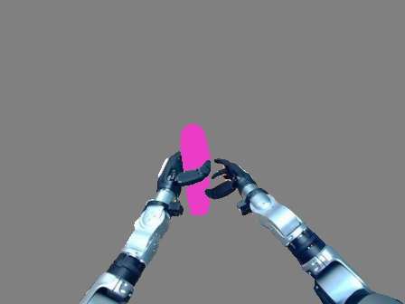
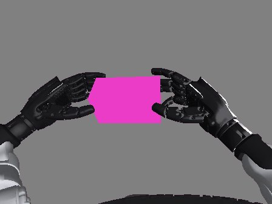
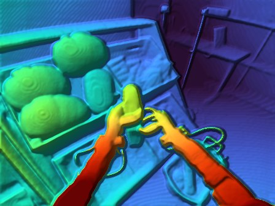
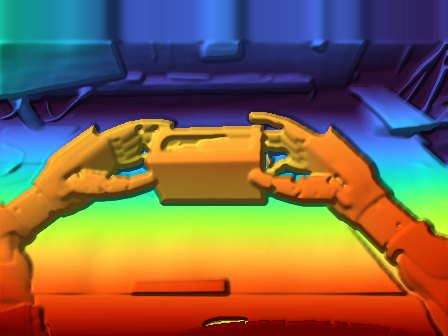
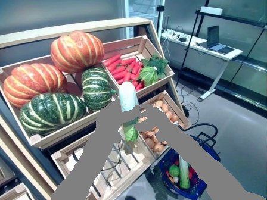
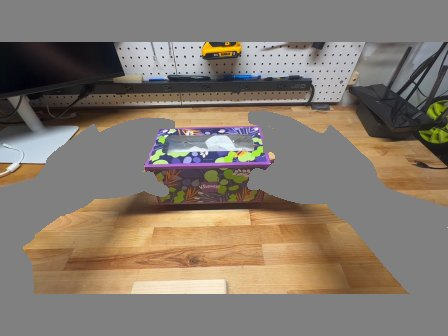
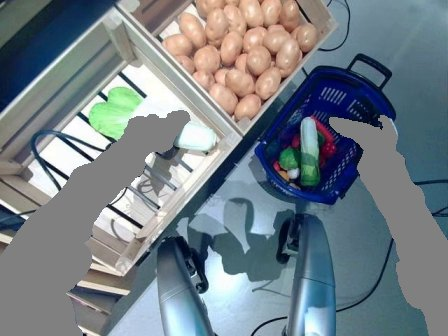
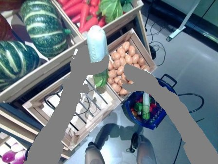
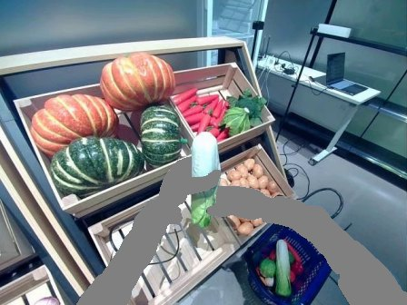
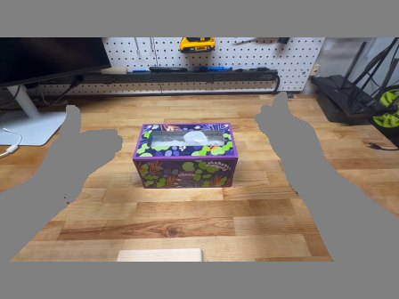
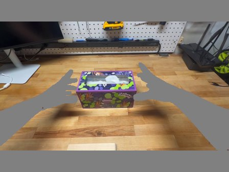
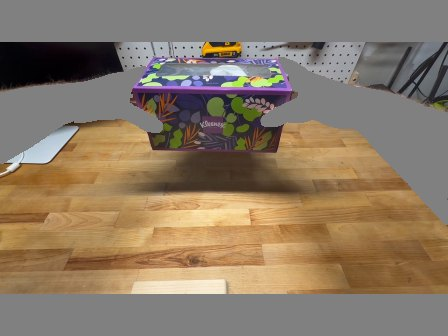
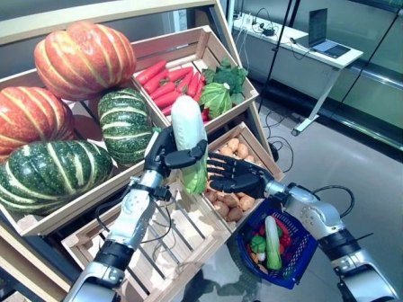
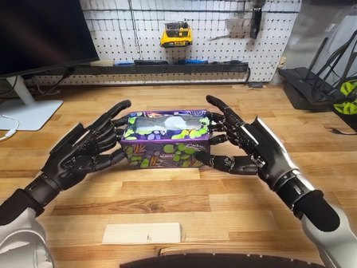
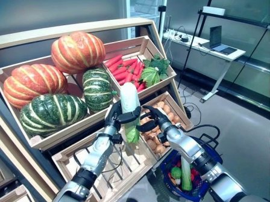
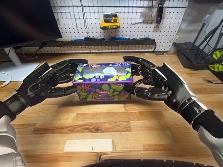
条件进模型有两条路：和要生成的视频按像素叠在一起（通道拼接），或者变成一批额外的画面 token 排在视频前面（token 拼接）。我们两条都在用。
| 通道拼接 | token 拼接 | |
|---|---|---|
| 做法 | 条件和要生成的视频逐像素叠在一起，第一层卷积之前把通道接起来 | 条件单独变成一批 token，排在视频 token 前面 |
| 对应关系 | 写死：控制图第 (x, y, t) 处直接配对输出的 (x, y, t) 处 | 不写死：输出每个位置靠注意力自己去参考里找有用的地方 |
| 适合 | 和输出对齐的条件 | 不对齐的条件：东西在参考里的位置和当前帧不一样 |
| 代价 | 几乎为零，token 数不变，第一层多一点参数 | 每张图多 588 个 token，注意力计算跟着涨 |
| 我们用在 | 控制图 A、同一时刻的源视频、洞的掩膜、控制图 B（v6b） | 场景图 ×3（别的时刻）、接力帧（上一段） |
后面 30 层 Transformer 每一层都有自注意力，所有 token 之间都能交换信息，所以不管从哪条路进来，信息最后都能送到需要的地方。差别在于给模型的先验不同。
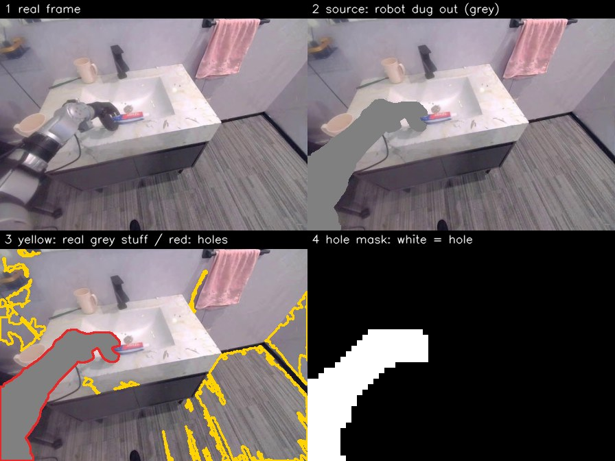
源视频里挖掉的地方涂的是灰色。可这个画面里，墙和地板本来就是差不多的灰，占了画面的 15%。模型只看源视频的话，分不清哪块灰是"挖掉了、要我自己画"，哪块灰是"真的墙，照抄就行"。
洞的掩膜就是第 4 张那样一张黑白图：白色 = 这里是挖掉的洞，黑色 = 这里的画面是真的。它跟着源视频一起喂进去，模型就不会把灰墙当成洞去重画，也不会把洞当成灰墙照抄。控制图 A 告诉模型"画什么"，源视频告诉它"场景长什么样"，洞的掩膜告诉它"源视频里哪些地方不能信"。
下面这张是同一件事的另一组例子，上排训练、下排推理。
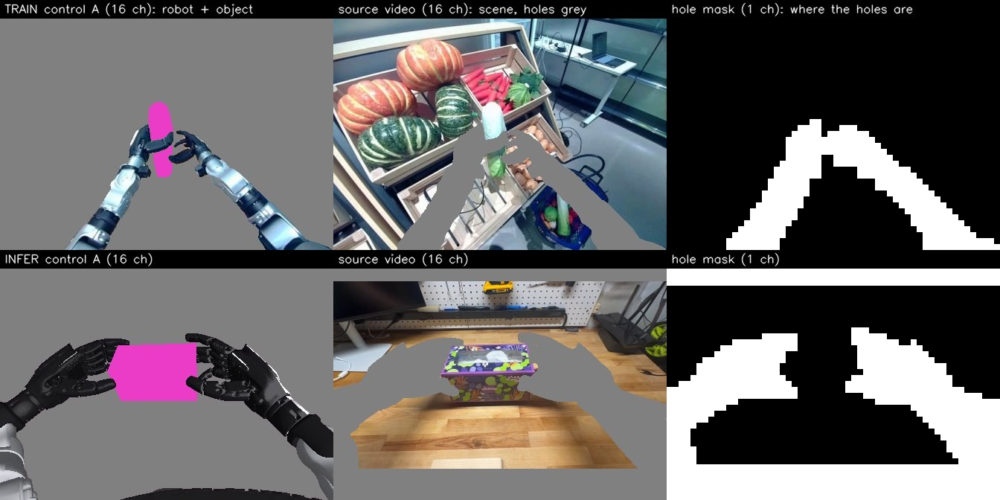
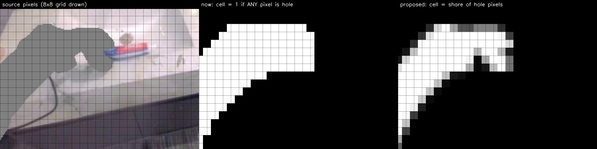
模型内部看画面的最小单位就是这些格子：VAE 把每 8×8 像素压成一格（448×336 变成 56×42），送进 Transformer 时再把 2×2 格并成一个 token，相当于 16×16 像素。控制图和源视频也都在这个分辨率上，所以掩膜跟着做成一格一格的。手指的细节靠的是格子里那 16 个通道（VAE 编码里存着格子内部的边缘），不靠掩膜。
现在的做法是"格子里有一个像素是洞就整格算洞"，偏保守：这张图里洞边上有 31% 的格子其实只有一部分是洞，手指之间的缝也被填满了。改成"记洞占的比例"（0 到 1 之间的灰度）后，边缘和指缝的信息就留下来了，正好配合 v6 的细洞，改动只有一行。
它为什么只占 1 个通道：它只是一张黑白图，不用过 VAE，每 8×8 像素缩成一个数（第 4 张里一格一格的就是这个），时间上每 4 帧并成 1 帧，正好对上潜空间的大小。机器手和物体掩膜在控制图 A 里，跟它不是一回事。
| 条件 | RoboRender | 我们 |
|---|---|---|
| 控制 | 深度视频 + 机器人掩膜视频，各过 VAE 各 16 通道，通道拼接 | 控制图 A（机器手 + 物体）16 通道；v6b 的深度放进首帧槽位 |
| 输入层 | 48 = 噪声 16 + 深度 16 + 掩膜 16 | 65 = 48 + 源视频 16 + 洞 1（v6b 不变） |
| 原版首帧槽位 | 放机器人掩膜视频 | v5 填 0；v6b 放深度 |
| 上一段的接力帧 | ref_conv 变成 token + CLIP 交叉注意力 | 一样 |
| 场景外观 | 靠接力帧和文字提示，没有源视频 | 同一时刻的源视频（通道）+ 场景图 ×3（token） |
| 多视角 | 几个相机画面上下拼成一张高图 | 只有头部一个视角 |
v6b 学 RoboRender，把深度放进这个空着的首帧槽位，不再新开通道。区别是我们从 v5 接着训：开训时先把这个槽位对应的权重清零。v5 里这个槽位一直收到 0，那套原版权重从来没起过作用，清零不影响 v5；清零后第 0 步的模型还是 v5，深度从零开始学，不会被原版"理解第一帧画面"的旧权重带偏。
推理时挖的是人手，画的是仿真机器手，两只手大体重合但对不严。纸巾盒里每只胳膊的重合度只有 0.55，人手面积约为机器手的 0.7 倍；整体平移去对齐只多 0.03，时间上错开 1–3 帧没有改善。所以错位来自姿态和粗细，不是平移。
训练时一半样本叠一份"错开的洞"：同一只细手形掩膜，以胳膊伸进画面的点为轴转一个随机角度（正态分布，标准差 8°），随机平移（标准差 6 像素），缩到 0.82–1.0 倍，收细 1–3 像素，参数在 49 帧里慢慢漂。右图红色只是标出来给人看的，实际都是灰色。
| 和机器手的关系 | 训练里错开的洞 | 纸巾盒真实 |
|---|---|---|
| 洞落在机器手外面的比例 | 20% | 21% |
| 这些地方离机器手（中位 / 90%） | 5 / 17 px | 5 / 18 px |
| 重合度 IoU | 0.51 | 0.55 |
| 面积比 | 0.71 | 0.70 |
去掉了之前 70% 样本里随机印在画面别处的人手形洞，机器手外扩从 5 像素改成 1 像素。
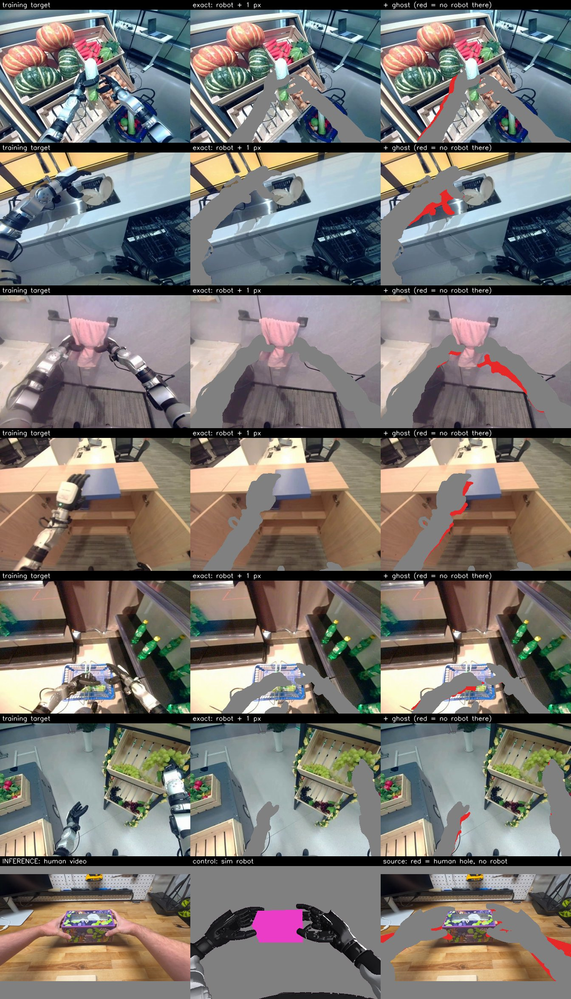
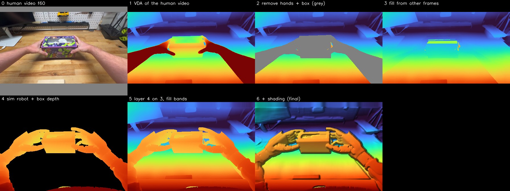
训练时不需要这套拼接：真机视频里机器人本来就在，VDA 一次就估出全部深度。待改：第 2 步挖盒子改用 SAM3 抠的真实盒子，避免边缘漏出一条细线。
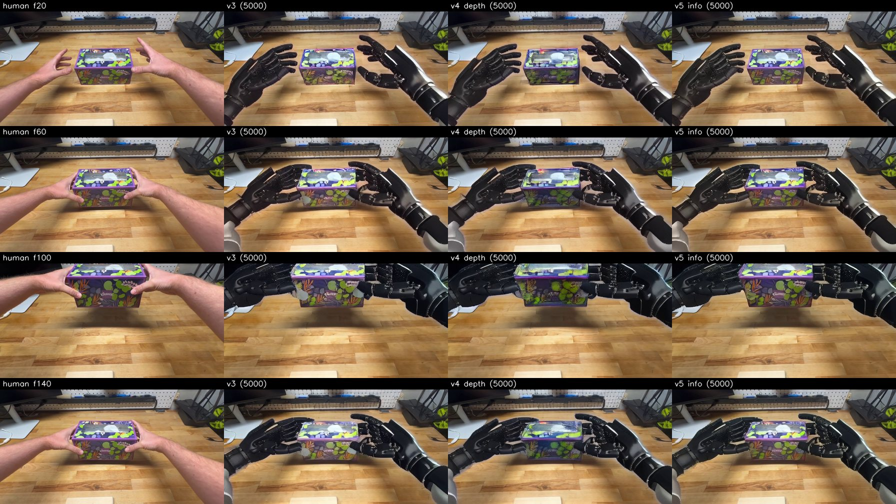
| 版本 | 改了什么 | 拇指下发灰占比（第 1/2/3 段） | 盒子 PSNR | 场景 PSNR |
|---|---|---|---|---|
| v3 · 5000 步 | 对齐源视频 + 物体掩膜 | 0.41 / 0.60 / 0.70 | 17.5 | 24.3 |
| v4 · 5000 步 | v3 + 物体深度（C1） | 0.72 / 0.59 / 0.53 | 16.3 | 23.5 |
| v5 · 3000 步 | v3 + 场景图 + 贴物体的洞 | 0.47 / 0.38 / 0.44 | 19.0 | 26.0 |
| v5 · 5000 步 | 同上 | 0.46 / 0.38 / 0.42 | 20.0 | 26.7 |
盒子本身露出来的部分发灰占比就在 0.35–0.44，所以 v5 的拇指区域已经是正常盒面。PSNR 是跟人手视频里看得见的部分比，只作参考；真正要看的是生成视频和仿真对不对得上。
| 版本 | 内容 | 怎么训 | 状态 |
|---|---|---|---|
| v6a | v5 + 新挖洞（细洞、错开的洞，去掉随机人手印） | 从 v5 第 5000 步接着训 3000 步，2 卡约 5.5 小时 | 已提交，排队中 |
| v6b | v6a + 控制图 B（整帧深度 + 明暗），放进原版首帧空槽位，30% 不给物体掩膜 | 同上，与 v6a 同时跑 | 深度传完自动提交 |
| v7 | 跨形态：加人手视频（HOT3D 等），再加三指手和夹爪 | 看 v6 结果再定 | 提议 |